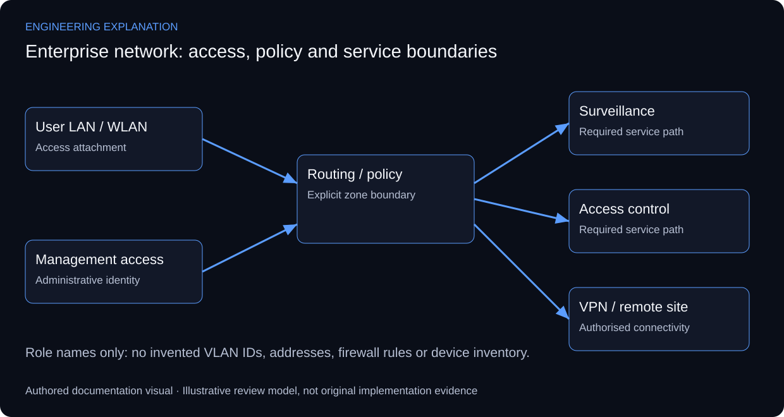

Network Engineering · Enterprise Infrastructure
Enterprise Wireless & Network Infrastructure Architecture
Designed multi-zone wireless and LAN infrastructure using MikroTik and Ubiquiti, including secure routing, VPN connectivity, traffic management and surveillance/access-control integration.
Implemented Project
System architecture
Implementation scope
The architecture connects local users and infrastructure services through wireless and wired access. Routing and VPN connectivity provide the site-to-site boundary.
Separating user access, site services and management
The documented infrastructure uses MikroTik and Ubiquiti for multi-zone LAN/wireless access, routing, VPN connectivity and traffic management, with surveillance and access-control integration. The original source architecture is retained. Its functional relationships do not establish an unpublished device inventory, address plan or configuration export.
A readable architecture separates access attachment from routing policy and service integration. User, surveillance, access-control and management traffic have different destinations and administrative needs. Segmentation is explained here as a design responsibility; the exact VLAN IDs, firewall rules and VPN type must come from actual configurations rather than being inferred from a source poster.
The reference boundary matrix asks which traffic is intended to cross each boundary, why it is allowed and how that permission is checked. A permitted client-to-service connection does not establish unrestricted inter-zone access. Similarly, VPN reachability is different from local WLAN coverage. Cisco’s campus reference supports layered access/routing reasoning; it is not evidence that Cisco hardware or SD-Access was deployed in this project.
Validation should pair positive tests with negative policy tests and include management access. A reusable documentation record identifies source zone, destination service, expected policy and observed result. Public examples use role names rather than customer subnets. Original addressing, authentication settings and acceptance outputs remain unavailable in the public release.

Review scenarios and expected evidence
These scenarios specify what evidence would support a review. They do not report additional completed tests.
| Review area | Method | Evidence to inspect |
|---|---|---|
| User to required service | Check intended source/destination policy | Permitted function with its recorded context |
| Unrelated zones | Attempt a disallowed reference flow | Isolation verified separately from routing |
| Device administration | Review management path and identity | Access limited according to the actual policy |
| Remote site | Check VPN path independently from WLAN | Tunnel/routing evidence and service test |
Technical references and provenance
Primary references support the engineering explanation, not claims about this project's undocumented configuration or results.
The boundary matrix is explanatory. No illustrative address plan or configuration is passed off as an as-built network export.
Engineering approach
The project architecture image belongs to enterprise infrastructure. Coverage planning and MPLS backbone work are presented separately so their respective tools and deliverables remain clear.
Source context
Original project posters and interface screenshots are identified separately from explanatory source diagrams. The gallery documents this project only. Open any figure to inspect it at full available resolution.
Verification context
The functional diagram explains this implementation’s engineering responsibilities. The original source preview appears above. As-built addressing, configuration exports and raw acceptance records are not included in the public release.
Detailed verification boundaries and technical source context